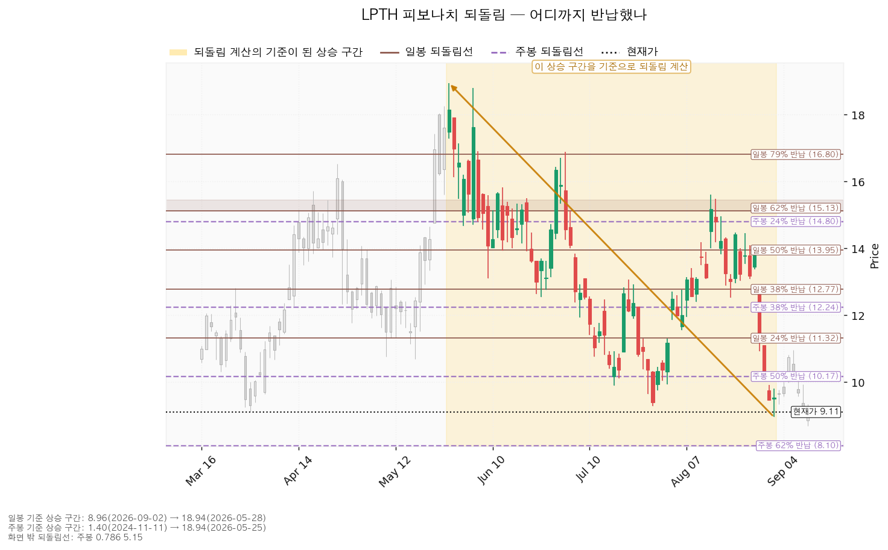
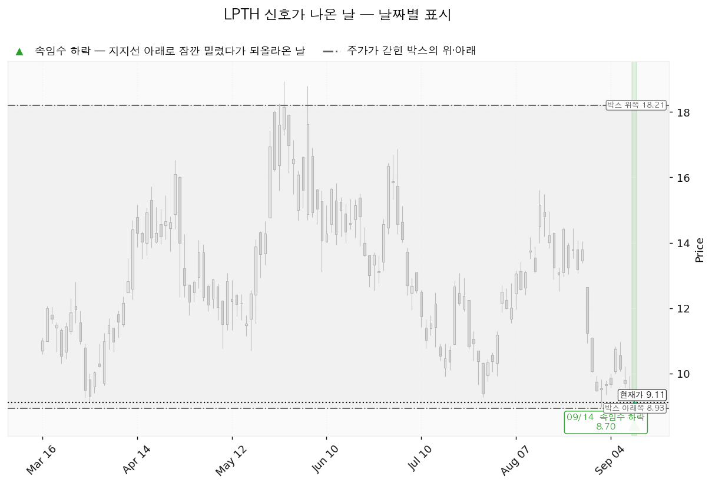
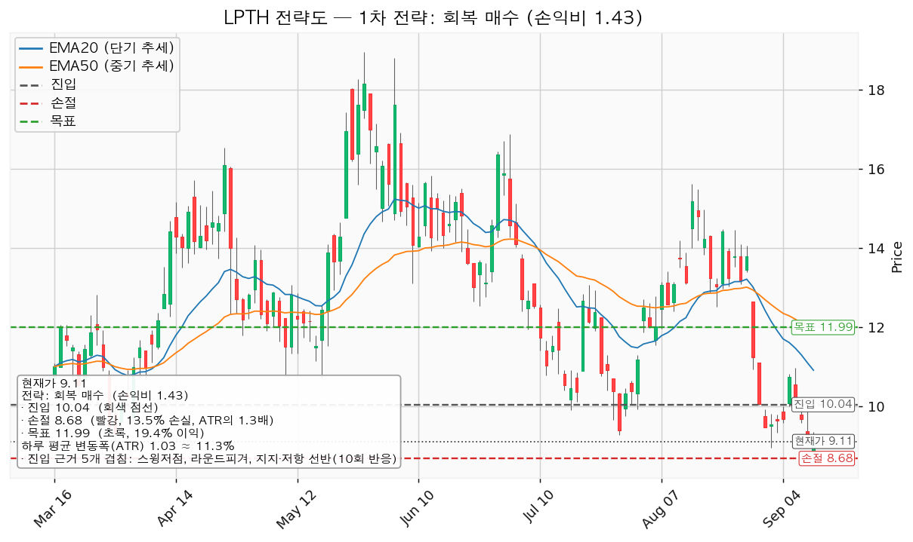
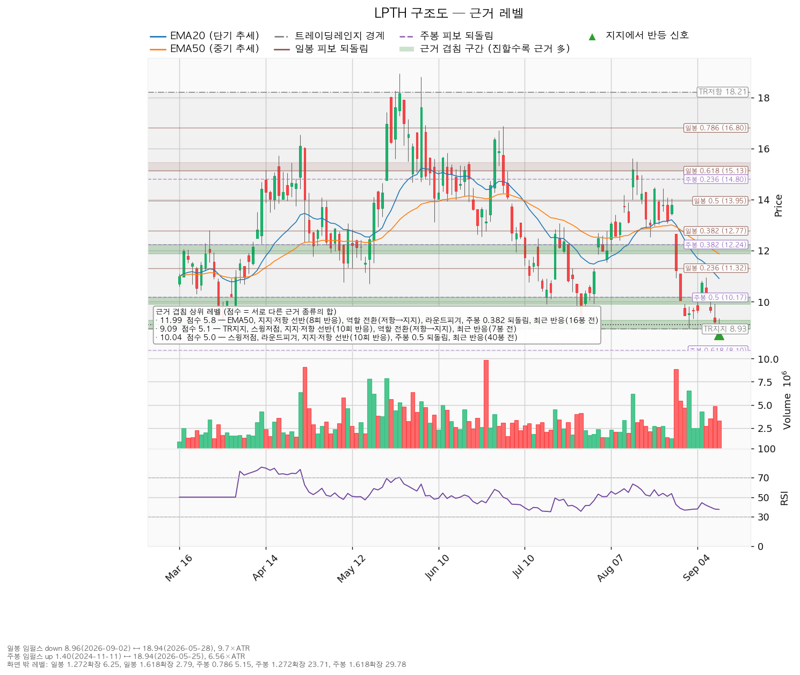

현재가 9.11달러(9월 14일 종가), 하루 평균 변동폭 1.0284달러 기준입니다.
| 구분 | 가격 | 판정 방식 | 현재가 대비 | 상태 |
|---|---|---|---|---|
| 회복선(진입 조건) | 10.04달러 | 일봉 종가로 회복한 뒤 되돌림에서 지지되는지 | +10.2% (하루 평균 변동폭의 0.90배) | 회복 대기 — 9월 9일 이후 종가로 넘은 적 없음 |
| 집행 손절 | 8.68달러 | 장중 저가 터치 시 집행 | -4.7% | 10.04달러에 새로 진입한 경우에만 유효합니다. 지금 들고 계신 200주에는 적용되지 않습니다 |
| 관망 종료 기준 | 8.93달러 / 날짜 조건 2026-11-13 | 일봉 종가가 8.93달러(아래쪽 겹침 구간의 바닥) 아래로 마감하면 신규 진입 계획을 접습니다. 날짜 조건은 다음 실적일입니다 | -2.0% (하루 평균 변동폭의 0.18배) | 유지 중 |
| 확인선 | 11.99달러 | 일봉 종가 돌파 후 되돌림에서 지지되는지 | +31.6% | 미돌파 |
| 폐기선(구조) | 8.93달러 | 종가 이탈 후 3거래일 내 회복 실패(또는 그 전에 7.90달러 아래 종가 마감) + 반등에서 저항으로 확인 | -2.0% (하루 평균 변동폭의 0.18배) | 유지 중 |
① 직전 트리거의 성적표 — 진입 조건은 미충족, 폐기선은 이탈해 판정 진행 중입니다.
| 직전이 건 조건 | 가격 | 실제 | 판정 |
|---|---|---|---|
| 회복선 — 실적 이후 10.04달러 종가 회복 | 10.04 | 실적일(9/11) 종가 9.20, 9/14 종가 9.11 | 미충족 — 진입 성립하지 않음 |
| 관망 종료 기준 — 8.96달러 종가 이탈 | 8.96 | 9/14 장중 저가 8.70으로 아래를 찍었으나 종가는 9.11 | 미충족(장중 이탈은 판정 대상이 아님) |
| 폐기선 — 9.38달러 종가 이탈 | 9.38 | 9/11 종가 9.20, 9/14 종가 9.11로 이틀 연속 이탈 | 1단계 관찰 진입, 2단계 판정 진행 중 |
| 집행 손절 — 8.69달러 장중 터치 | 8.69 | 9/14 저가 8.70 | 미체결 — 0.01달러 위에서 멈췄습니다 |
| 목표·확인선 12.04달러 | 12.04 | 그 사이 최고가 9.93(9/11) | 미도달 |
| 아래쪽 진입 후보 9.21달러 | 9.21 | 9/11 저가 9.04, 9/14 저가 8.70 | 두 번 터치 |
폐기선 이탈이 처음 나온 날은 9월 11일입니다. 직전 리포트의 2단계 조건은 "이탈 후 3거래일 안에 9.38달러를 종가로 회복하지 못하거나, 그 전에 종가가 8.31달러 아래로 마감 — 둘 중 먼저 오는 쪽"이었습니다. 3거래일은 9/14·9/15·9/16이고 8.31달러 아래 종가는 나오지 않았으므로, 아직 2단계가 확정되지 않은 진행 중 상태입니다. 9월 16일 종가까지가 판정 기한입니다.
② 장부 확인 결과 — 직전 리포트의 보유 서술을 정정합니다.
직전 리포트는 "장부에도 LPTH 체결 기록이 없습니다"라고 적었습니다. 그 시점 기준으로는 맞았으나, 9월 14일 09시 19분에 2026년 7월 1일자 매수가 장부에 등록됐습니다 — 200주, 평단 13.1821달러(증권사 평단 기준 일괄 등록). 따라서 이 리포트부터는 미보유자가 아니라 보유자 관점으로 씁니다.
| 항목 | 값 |
|---|---|
| 보유 수량 / 평단 | 200주 / 13.1821달러 |
| 취득원가 | 2,636달러 |
| 현재 평가액 (9.11달러) | 1,822달러 |
| 평가손익 | -814달러 (-30.9%) |
③ 좌표의 이동 — 박스 판정 창이 90봉에서 180봉으로 바뀌면서 아래쪽 선이 전부 내려왔습니다.
| 좌표 | 직전(09-11) | 이번(09-15) | 왜 움직였나 |
|---|---|---|---|
| 회복선 | 10.04달러 | 10.04달러 | 같습니다. 9.90~10.17달러 선반이 그대로입니다(10회 반응, 마지막 반응 9/11) |
| 폐기선 | 9.38달러 | 8.93달러 | 9월 14일 저가 8.70이 90봉 박스 하단 9.38을 깨면서 그 창은 가격이 박스 안에 머문 비율이 97.8%로 떨어졌고, 100%를 유지한 180봉 창이 채택돼 박스 하단이 9.38 → 8.93달러로 내려왔습니다 |
| 관망 종료 기준 | 8.96달러 | 8.93달러 | 아래쪽 겹침 구간의 바닥이 8.96 → 8.93달러로 내려간 만큼 함께 내려왔습니다 |
| 확인선 · 목표 | 12.04달러 | 11.99달러 | 50일 지수이동평균이 12.10 → 11.87달러로 내려오며 겹침 구간이 11.92~12.24에서 11.87~12.24달러로 이동했습니다 |
| 집행 손절 | 8.69달러 | 8.68달러 | 겹침 구간 바닥이 내려간 만큼 함께 내려왔습니다 |
| 손익비 | 1:1.49 | 1:1.43 | 진입은 같은데 목표가 0.05달러 내려오고 손절이 0.01달러 내려왔습니다 |
| 하루 평균 변동폭 | 1.0704달러 | 1.0284달러 | 실적 발표 전후로도 변동폭이 더 줄었습니다 |
폐기선을 이탈한 직후에 폐기선 자체가 내려간 것이므로, 이 점은 분명히 적어 둡니다. 9.38달러는 직전 리포트가 건 선이고 그 선은 9월 11일에 종가로 깨졌습니다. 이번에 8.93달러로 내려온 것은 판정 창이 바뀌었기 때문이며, 직전 판정을 취소하는 것이 아닙니다. 그래서 이 리포트는 두 선을 모두 살려 둡니다 — 9.38달러는 9월 16일 종가까지의 2단계 판정용, 8.93달러는 보유분 정리 기준용입니다.
④ 판단이 바뀐 곳 — 실적 발표로 컨센서스 방향이 뒤집혔고, 직전 리포트의 "실적 전망 하향" 판정을 정정합니다.
직전 리포트는 "추정치가 내려가면서 가격이 내렸으므로 배수 수축이 아니라 실적 전망의 하향"이라고 적었습니다. 9월 11일 실적 발표 이후 조회에서는 같은 항목들이 전부 위로 움직였습니다.
| 항목 | 직전(09-11) | 이번(09-15) |
|---|---|---|
| 후행 주당순이익 | -0.50달러 | -0.38달러 |
| 올해 주당순이익 컨센서스 | -0.155달러 | -0.05달러 |
| 선행 주당순이익 | +0.02달러 | +0.11달러 |
| 선행 PER | 484.0배 | 82.8배 |
| 목표주가 평균 | 15.58달러 | 15.80달러 |
추정치가 올라가는 동안 가격은 9.68 → 9.11달러로 -5.9% 내렸습니다. 이것은 배수 수축이며 사업 전망의 하향이 아닙니다. 직전 리포트의 (c) 항목 판정을 이렇게 정정합니다. 다만 현금흐름은 반대 방향으로 움직였으므로(아래 컨센서스 절 참조), 결론 자체는 관망에서 바뀌지 않았습니다.
라이트패스 테크놀로지스(LPTH)는 열화상 카메라와 산업용 계측기에 들어가는 적외선 광학 렌즈·광학 조립체를 만드는 미국 기업입니다.
| 항목 | 값 |
|---|---|
| 현재가 | 9.11달러 (2026-09-14 종가) |
| EMA20 / EMA50 (20일·50일 지수이동평균) | 10.91 / 11.87달러 — 각각 현재가보다 하루 평균 변동폭의 1.75배·2.69배 위에 있습니다 |
| RSI(14) (0~100 사이의 과열·침체 지표) | 37.4 — 약세 구간이며 통상적 과매도 기준선 30 아래는 아닙니다 |
| ATR (하루 평균 변동폭) | 1.0284달러 = 주가의 11.29% |
| 국면 판정 | 횡보 레인지(구조 유지 — 하단 사수 조건부), 추세는 하락 |
| 관측 항목 | 값 |
|---|---|
| 지지 테스트별 매도 거래량 (평균 대비) | 3/12 0.58배 → 3/20 1.07배 → 3/30 0.92배 → 7/17 0.64배 → 7/29 1.43배 → 9/14 0.92배 — 추세는 증가 |
| 박스 안 저점 | 10.30 → 10.31 → 9.12 → 9.90 → 9.28 → 8.70달러 — 절하 |
| 상승봉 대 하락봉 거래량비 | 1.11 (직전 1.18에서 내려왔습니다) |
지지 테스트 목록이 직전 리포트와 다른 것은 판정 창이 90봉에서 180봉으로 넓어져 3월 테스트들이 들어왔기 때문입니다. 가장 최근 테스트인 9월 14일의 거래량은 평균의 0.92배로, 직전 테스트(7/29 1.43배)보다 작습니다.
일봉과 주봉 모두 계산 가능한 구간이 있었습니다. 일봉은 5월 고점에서 9월 저점까지의 하락 구간이 기준이므로 되돌림선은 "하락분의 얼마를 되돌렸나"를 뜻하고, 주봉은 상승 구간이 기준이므로 "상승분의 얼마를 반납했나"를 뜻합니다.
| 기준 | 구간 | 0.236 | 0.382 | 0.5 | 0.618 |
|---|---|---|---|---|---|
| 일봉(하락) | 2026-05-28 18.94달러 → 2026-09-02 8.96달러 | 11.32 | 12.77 | 13.95 | 15.13 |
| 주봉(상승) | 2024-11-11 1.40달러 → 2026-05-25 18.94달러 | 14.80 | 12.24 | 10.17 | 8.10 |

| 날짜 | 신호 | 가격 | 해석 |
|---|---|---|---|
| 2026-09-14 | spring(속임수 하락) | 8.70달러 | 박스 하단 8.93달러 아래로 장중에 내려갔다가 종가 9.11달러로 되돌아 올라온 움직임입니다. 매도 물량을 털어내는 신호로 쓰입니다 |
직전 리포트가 인용한 9월 2일·3일의 속임수 하락은 이번 산출에 나오지 않습니다. 그때의 기준이던 박스 하단 9.38달러가 8.93달러로 내려가면서, 9월 2일 저가 8.96과 9월 3일 저가 9.34가 박스 하단 아래로 내려간 움직임에 해당하지 않게 됐기 때문입니다. 지금 남아 있는 신호는 9월 14일 하나입니다.
이 신호가 요구하는 뒷받침은 아직 나오지 않았습니다. 되돌아 올라온 것은 맞지만 종가 9.11달러는 회복선 10.04달러보다 0.93달러(하루 평균 변동폭의 0.90배) 아래이고, 그날 거래량은 평균의 0.92배로 매도가 소진됐다고 말할 만큼 크지 않았습니다. 국면 후보는 매집(물량을 다시 모으는 국면)으로 나오지만 박스 안쪽 판정이 중립이므로 아직 결론에 이르지 않았습니다.

성립하는 셋업은 reclaim_long(회복 후 롱 전환) 하나뿐입니다. 되돌림 저가매수 셋업과 지지 확인 매수 셋업은 산출되지 않았습니다. 유효 박스가 있고 현재가 9.11달러가 지지 선반(8.93~9.28달러, 10회 반응) 안에 들어와 있는데도 지지 확인 매수가 나오지 않은 것은, 박스 안쪽 판정이 매집 우위가 아니라 중립에 머물렀기 때문입니다.
| 항목 | 내용 |
|---|---|
| 이름 / 방향 | reclaim_long / 롱 |
| 진입 | 10.04달러 — 일봉 종가로 회복한 뒤 |
| 진입 근거 (겹침 5.0점) | 스윙저점 + 라운드피겨 + 지지·저항 선반(10회 반응) + 주봉 0.5 되돌림 + 최근 반응(40봉 전) / 구간 9.90~10.17달러 |
| 손절 | 8.68달러 (진입 대비 -13.56%, 하루 평균 변동폭의 1.32배) |
| 손절 근거 | 근거 겹침 구간(8.93~9.28달러, 5.1점) 바로 아래에 두었습니다. 구간 안쪽이 아니라 아래에 둔 만큼 손절 폭이 넓어졌고 그만큼 손익비가 낮아졌습니다 |
| 목표 | 11.99달러 (진입 대비 +19.4%) |
| 목표 근거 (겹침 5.8점) | EMA50 + 지지·저항 선반(8회 반응) + 역할 전환(저항→지지) + 라운드피겨 + 주봉 0.382 되돌림 + 최근 반응(16봉 전) / 구간 11.87~12.24달러 |
| 손익비 | 1:1.43 (손절 폭 1.32 ATR) |
| 구조적 손절 기준 손익비 | 1:1.43 — 위와 같습니다. 손절 8.68달러는 이미 겹침 구간 아래에 둔 구조적 손절이므로, 손절을 하루 변동폭 안으로 조여서 얻은 손익비가 아닙니다 |
| 구조 증명도 | 회복 확인형 (가중치 1.0) — 저항을 종가로 되찾은 뒤에만 들어가므로 진입가는 불리하지만 구조가 먼저 증명됩니다 |
| 엣지의 종류 | 모멘텀 — "저항을 종가로 되찾으면 그 방향이 이어진다"는 전제입니다. 자주 틀리고 소수가 크게 맞는 유형이며 승률을 기대하는 셋업이 아닙니다(이 유형의 일반적 성격이며 이 엔진에서 측정한 값이 아닙니다) |
| 청산 | 목표 11.99달러에서 전량입니다. 트레일링은 걸지 않습니다 |
| 비중 | 계좌의 7.4%. 1회 매매 손실 한도 1%를 손절 폭 13.56%로 나눈 값이며, 한 종목 상한 13%보다 낮습니다 |
대표 셋업 선정 이유: 손익비 1.43 × 구조 증명도(회복 확인형) × 근거 겹침 5.0점으로 선정했습니다. 산출된 셋업이 하나뿐이므로 손익비 1등과의 트레이드오프 문제는 발생하지 않습니다. 손익비가 1을 넘으므로 보류 대상도 아닙니다.
모멘텀 전제에 고정 목표를 붙인 점: 진입 근거는 모멘텀이지만 집행은 박스 규칙을 따릅니다 — 손절은 구조 아래에 두고, 목표 11.99달러에서 전량 청산하며, 트레일링은 걸지 않습니다. 11.99달러 위 구간은 이 포지션의 연장이 아니라 새 셋업으로 다시 잡습니다.
분할하지 않는 이유: 1차 목표 11.02달러에서 50%를 익절하고 잔여분 손절을 진입가 10.04달러(본전)로 올린 뒤 2차 목표 11.99달러에서 나머지 50%를 파는 안도 함께 산출됐습니다. 그러나 1차 청산의 손익비는 0.72에 그쳐, 전 구간을 합친 손익비가 1.43에서 1.07로 내려가고, 1차 청산 뒤 본전 손절에 걸리면 0.36까지 떨어집니다. 헤드라인 손익비 1.43은 목표 11.99달러에서 전량 청산할 때만 성립하므로, 이 리포트는 전량 청산 하나만 계획으로 냅니다.

평단 13.1821달러에 200주, 현재 평가손익 -814달러(-30.9%) 입니다. 이 물량은 이번 셋업의 진입 10.04달러와 무관하게 이미 들어가 있는 포지션이므로, 판정 기준을 따로 적습니다.
| 가격 | 이 물량에 일어나는 일 |
|---|---|
| 8.93달러 일봉 종가 이탈 | 200주 전량 정리. 그 가격에서의 평가손익은 -850달러(-32.3%)입니다 |
| 9.38달러 — 9월 16일 종가까지 회복 | 직전 리포트의 2단계 판정이 해제됩니다. 보유 유지 |
| 9.38달러 — 9월 16일 종가까지 회복 실패 | 2단계(경고) 확정. 보유는 유지하되 이 종목에 신규 매수를 하지 않습니다 |
| 11.99달러 도달 | 평가손익 -238달러(-9.0%). 확인선이므로 여기서 다시 판단합니다 |
진입 10.04달러가 현재가 9.11달러보다 +10.2% 위에 있으므로, 현재가에서 사는 것은 이 계획에 들어 있지 않습니다. 10.04달러 종가가 나올 때까지 기다리는 것이 계획의 전부입니다.
이 종목의 하루 평균 변동폭은 주가의 11.29%로 큽니다. 손절 폭 13.56%는 그보다 넓으므로(1.32배) 논지와 무관한 일상적 흔들림만으로 손절에 닿을 가능성은 낮습니다. 다만 손절 폭 자체가 13%를 넘으므로 비중 7.4%가 그 넓은 손절 폭에서 나온 값입니다.
진입에서 목표까지는 1.95달러로 하루 평균 변동폭의 1.90배입니다. 트레일링을 검토할 만한 폭(2배 이상)에 미치지 못하므로 단일 청산으로 끝냅니다(이 2배 기준은 관행이지 정설이 아닙니다).
확인선과 대표 셋업의 목표가 같은 11.99달러인 것은 모순이 아니라 분기입니다.
박스 상단 18.21달러는 맥락으로만 적습니다. 현재가에서 하루 평균 변동폭의 8.8배 위에 있어 실행 좌표가 되지 못합니다.
| 단계 | 트리거 | 의미 | 행동 |
|---|---|---|---|
| ① 관찰 | 일봉 종가가 10.04달러 아래로 마감 | 구조 이탈의 시작일 뿐 무효가 아닙니다. 되돌아 올라오면 오히려 속임수 하락일 수 있습니다 | 신규 진입만 중단하고, 집행 손절은 그대로 둡니다 |
| ② 경고 | 이탈 후 3거래일 안에 10.04달러를 종가로 회복하지 못하거나, 그 전에 일봉 종가가 9.01달러 아래로 마감(하루 평균 변동폭의 1배만큼 더 밀림) — 둘 중 먼저 오는 쪽 | 저항 회복 실패 가능성이 우세해집니다 | 잔여 비중 축소. 반등이 나오면 이 가격에서의 반응을 확인합니다 |
| ③ 무효 | 반등이 10.04달러에서 막히고 그 아래로 되밀림(지지가 저항으로 전환) | 셋업 폐기 — 구조 해석이 틀린 것으로 확정 | 포지션 정리 후 새 구조가 만들어질 때까지 관망 |
집행 손절 8.68달러는 이 3단계 판정과 무관하게 별도로 작동합니다. 그리고 장중 일시 이탈은 어느 단계에도 해당하지 않습니다 — 9월 14일 저가 8.70달러가 그 예이며, 그날 종가는 9.11달러로 마감해 어느 단계에도 들어가지 않았습니다.
폐기선 8.93달러는 아직 종가로 이탈되지 않았으므로 어느 단계에도 들어가 있지 않습니다. 반면 직전 리포트가 건 9.38달러는 9월 11일 종가로 이탈해 1단계(관찰)에 있고, 9월 16일 종가까지 회복하지 못하면 2단계(경고)로 넘어갑니다.
폐기선 8.93달러는 현재가에서 하루 평균 변동폭의 0.18배 거리라 실무적으로 작동합니다. 다만 이 종목의 논지는 가격만으로 결판나지 않습니다. 2026년 11월 13일 실적에서 아래가 나오면 가격이 어디에 있든 롱 전환 논지를 접습니다.
1. 영업활동 현금흐름이 또 음수로 나오는 경우 — 2026년 6월 결산 기준 -1,023만 달러이며, 직전 결산(-833만 달러)보다 유출이 커졌습니다. 세 분기 연속 영업 단계에서 현금이 나가면 설비투자가 앞선 적자가 아니라 본업의 적자입니다. 2. 설비투자 급증이 매출로 돌아오지 않는 경우 — 설비투자가 126만 → 627만 달러로 +396.6% 늘었습니다. 이 투자가 매출 증가로 이어지지 않고 잉여현금흐름 적자만 키우면, 확장 투자가 아니라 유지 비용이 커진 것으로 봅니다. 3. 올해 주당순이익 컨센서스 -0.05달러 경로가 다시 아래로 수정되는 경우 — 이번 실적으로 -0.155달러에서 -0.05달러로 개선된 경로가 되돌아가면, 이 리포트가 정정한 ④번 판정(배수 수축)의 근거가 사라집니다.
조건: 10.04달러 종가 회복 후 지지 확인 → 11.99달러 종가 돌파 구조: 9월 14일 속임수 하락이 진짜였음이 확인되고 → 거래량을 동반한 상승이 나온 뒤 → 되돌림에서 지지를 확인하고 → 상승 국면으로 넘어가는 순서입니다 행동: 10.04달러 회복과 지지를 확인한 뒤 신규 진입은 계좌의 7.4%까지(보유 평가액이 이미 계좌의 13%를 넘으면 추가하지 않습니다), 11.99달러 돌파 시에는 새 셋업으로 다시 잡습니다
조건: 8.93달러를 지키면서 11.99달러 아래 박스에 머무름 구조: 구조는 그대로 유지되는 상태입니다. 매물을 소화하는 데 시간이 필요한 국면이며, 부정적 신호가 아닙니다 행동: 보유 200주를 유지하고 신규 진입은 보류하면서 아래 세 가지를 추적합니다
| 추적 항목 | 좋아지는 모습 | 현재 관측치 |
|---|---|---|
| 지지 테스트 거래량 | 테스트를 반복할수록 매도 거래량이 줄어듦 | 증가 (0.58 → 1.07 → 0.92 → 0.64 → 1.43 → 0.92배). 가장 최근 9/14 테스트만 놓고 보면 직전 1.43배에서 0.92배로 줄었습니다 |
| 박스 안 저점 | 저점이 절상됨 | 절하 (10.30 → 10.31 → 9.12 → 9.90 → 9.28 → 8.70달러) |
| 상승봉 대 하락봉 거래량비 | 1보다 뚜렷하게 커짐 | 1.11 (직전 1.18에서 내려왔습니다) |
세 항목 가운데 개선된 것은 가장 최근 지지 테스트의 거래량 하나이고, 나머지 둘은 그대로이거나 소폭 악화됐습니다. 이 표의 값이 바뀌는지가 보유를 이어갈지 판단하는 실질적 기준입니다.
조건: 8.93달러 종가 이탈 후 3거래일 내 회복 실패(또는 그 전에 7.90달러 아래로 종가 마감) + 반등에서 8.93달러가 저항으로 확인 구조: 물량을 다시 모으던 구간이 아니라 모아둔 물량을 넘기던 구간이었다는 뜻이며, 추가 저점 갱신 가능성을 엽니다 행동: 보유 200주를 전량 정리하고, 아래쪽 다음 가격대인 8.00~8.10달러 구간(라운드피겨 + 주봉 0.618 되돌림, 2.1점)에서 새 박스가 만들어지는지 지켜봅니다
점수는 서로 다른 근거 종류의 가중치 합입니다. 같은 종류가 여러 개 붙어도 한 번만 가산되므로, 점수가 높다는 것은 성격이 다른 근거들이 같은 가격대에 모여 있다는 뜻입니다.
| 가격 | 구간 | 점수 | 근거 |
|---|---|---|---|
| 11.99달러 | 11.87~12.24 | 5.8 | EMA50, 선반(8회 반응), 역할 전환(저항→지지), 라운드피겨, 주봉 0.382 되돌림, 최근 반응(16봉 전) |
| 9.09달러 | 8.93~9.28 | 5.1 | 박스 하단, 스윙저점, 선반(10회 반응), 역할 전환(저항→지지), 최근 반응(7봉 전) |
| 10.04달러 | 9.90~10.17 | 5.0 | 스윙저점, 라운드피겨, 선반(10회 반응), 주봉 0.5 되돌림, 최근 반응(40봉 전) |
| 12.62달러 | 12.52~12.77 | 4.9 | 스윙저점, 선반(10회 반응), 역할 전환(저항→지지), 일봉 0.382 되돌림, 최근 반응(16봉 전) |
| 11.02달러 | 10.86~11.32 | 4.3 | 선반(9회 반응), EMA20, 라운드피겨, 일봉 0.236 되돌림, 최근 반응(3봉 전) |
| 8.05달러 | 8.00~8.10 | 2.1 | 라운드피겨, 주봉 0.618 되돌림 |
현재가 9.11달러는 9.09달러 구간(5.1점) 안쪽에 들어와 있습니다. 직전 리포트에서는 위아래 구간 사이의 빈 공간에 있었으나, 지금은 아래쪽 지지 구간 안입니다. 이 구간을 종가로 지키는 동안은 구조가 유지되는 것으로 보고, 바닥 8.93달러를 종가로 잃으면 다음 받칠 가격대는 8.00~8.10달러입니다 — 8.93달러에서 8.10달러까지 0.83달러(하루 평균 변동폭의 0.81배) 사이에는 근거가 겹치는 가격대가 없습니다.
역할 전환 표시가 붙은 구간들은 과거 저항이던 자리가 지지로 바뀐 곳이므로, 다시 저항으로 되돌아갈 수도 있는 가격대입니다.

| 항목 | 값 |
|---|---|
| 애널리스트 수 / 추천등급 | 5명 / strong_buy |
| 목표주가 (평균 / 최저 / 최고) | 15.80 / 15.00 / 17.00달러 |
| 후행 PER (주가 ÷ 지난 1년 주당순이익) | 산출 불가 (후행 주당순이익 -0.38달러, 적자) |
| 선행 PER (주가 ÷ 앞으로 1년 주당순이익 추정치) | 82.8배 (선행 주당순이익 0.11달러) |
| 올해 주당순이익 컨센서스 | -0.05달러 (범위 -0.05 ~ -0.02), 전년 대비 적자 폭 -89.4% 축소 |
| 내년 주당순이익 컨센서스 | 조회되지 않았습니다 — 평균·최저·최고가 모두 비어 있어 이 리포트는 내년 수치를 쓰지 않습니다 |
| 다음 실적일 | 2026-11-13 |
(a) 배수 두 가지를 함께 봅니다. 후행 PER은 적자라 산출되지 않고, 선행 PER 82.8배는 선행 주당순이익 0.11달러라는 작은 분모에서 나온 값입니다. 직전 리포트의 484.0배에서 82.8배로 내려온 것은 가격이 내려서가 아니라 선행 주당순이익 추정치가 0.02 → 0.11달러로 올라왔기 때문입니다. 그래도 82.8배는 이익으로 정당화되는 수준이 아니며, 이 종목은 여전히 이익 배수로 비싸다·싸다를 판정할 단계가 아닙니다. 올해 적자 컨센서스 -0.05달러가 흑자로 넘어가는지를 봅니다.
(b) 목표주가는 분포로 봅니다. 평균 15.80달러, 최저 15.00달러, 최고 17.00달러입니다. 현재가 9.11달러는 애널리스트 5명 전원의 목표 가운데 가장 낮은 15.00달러보다도 아래입니다. 다섯 명 전부가 틀렸거나, 아직 목표를 고치지 않았거나 둘 중 하나입니다. 실적 발표 직후 조회임에도 최저·최고가 직전과 같다는 점은, 이번 실적으로 목표를 바꾼 애널리스트가 많지 않다는 뜻으로 읽힙니다.
(c) 추정치 방향과 가격 방향 — 배수 수축입니다. 직전 판정을 정정합니다.
| 항목 | 직전(09-11) | 이번(09-15) | 방향 |
|---|---|---|---|
| 후행 주당순이익 | -0.50달러 | -0.38달러 | 개선 |
| 올해 주당순이익 컨센서스 | -0.155달러 | -0.05달러 | 개선 |
| 선행 주당순이익 | +0.02달러 | +0.11달러 | 개선 |
| 주가 | 9.68달러 | 9.11달러 | -5.9% |
추정치가 올라가는 동안 가격이 내렸으므로 배수 수축이며 사업 전망의 하향이 아닙니다. 직전 리포트가 "실적 전망의 하향"으로 적은 판정을 이 근거로 정정합니다.
(d) 현금흐름의 성격. 2026년 6월 결산 기준으로 영업활동 현금흐름 -1,023만 달러, 설비투자 627만 달러(전년 126만 달러에서 +396.6%), 잉여현금흐름 -1,649만 달러입니다. 세 수치는 서로 맞습니다. 영업 단계에서 현금이 나가고 있으므로 설비투자가 앞선 적자와는 성격이 다르고, 직전 결산(-833만 달러)보다 유출이 커졌습니다. 여기에 설비투자까지 4배 가까이 늘어 잉여현금흐름 적자가 -959만에서 -1,649만 달러로 확대됐습니다. 이익 추정치는 올라갔는데 현금 유출은 커졌습니다. 11월 13일 실적의 확인 항목이 여기서 나옵니다.
(e) 상승 여력의 분해. 목표주가 평균 15.80달러를 선행 주당순이익 0.11달러로 나누면 143.6배입니다. 현재 선행 PER 82.8배와 비교하면 이 목표주가는 이익 증가가 아니라 배수가 82.8배에서 143.6배로 더 확장되는 것을 전제합니다. 현재 배수 82.8배를 그대로 두고 목표 15.80달러에 닿으려면 선행 주당순이익이 지금 컨센서스의 1.7배인 0.19달러는 돼야 합니다. 따라서 이 목표는 이익 전망보다 배수 수준에 의존합니다.
주도주 여부 판정: 주도주가 아닙니다. 추세는 하락이고, 현재가는 EMA20·EMA50 아래에 있으며, 박스 안 저점은 절하됐고, 영업 단계 현금 유출이 커졌습니다. 이익 추정치가 올라온 것은 긍정적이나 그것만으로 주도주 지위를 말할 단계가 아닙니다.
| 날짜 | 이벤트 | 볼 것 |
|---|---|---|
| 2026-09-16 | 직전 리포트 폐기선 9.38달러의 2단계 판정 기한 | 그날 종가가 9.38달러 위인지. 회복 실패 시 경고 단계 확정이며 이 종목에 신규 매수를 하지 않습니다 |
| 2026-11-13 | 분기 실적 발표 | ① 영업활동 현금흐름이 음수를 벗어났는지(직전 -1,023만 달러) ② 설비투자 +396.6% 증가분이 매출 증가로 돌아왔는지 ③ 올해 적자 컨센서스 -0.05달러 대비 실제치 |
이 리포트는 정보 제공 목적이며 투자 권유가 아닙니다. 최종 판단과 책임은 투자자 본인에게 있습니다.